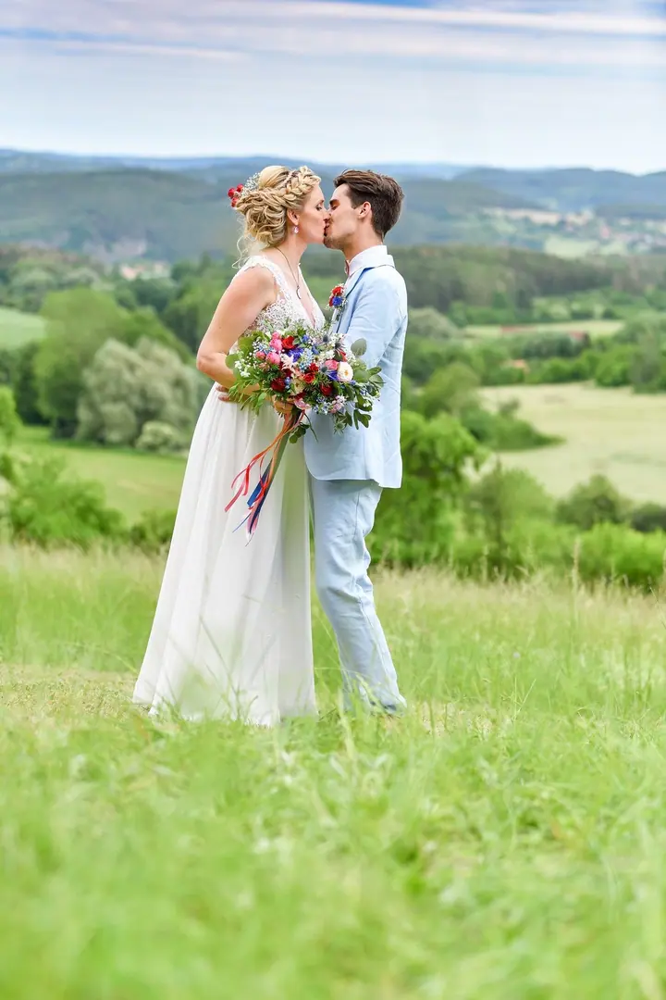
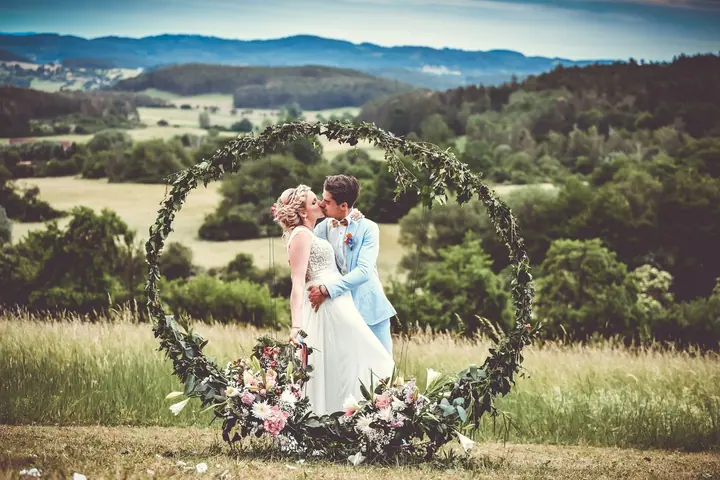
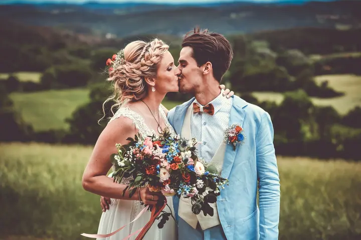
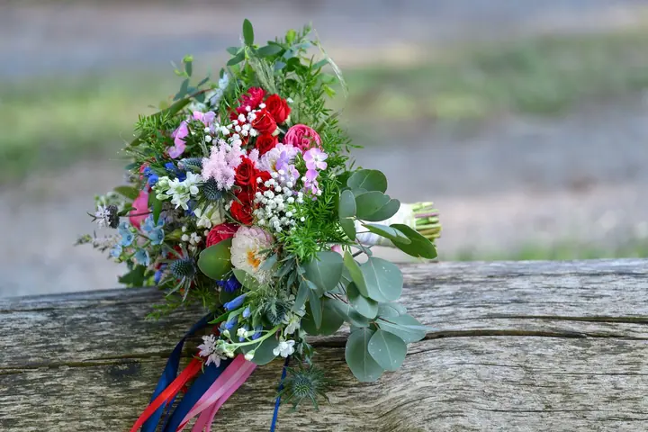

jedna
Svatby
Nejčastěji fotím celý den, od příprav až po večerní zábavu, protože jen tak se dá zachytit atmosféra. Kromě focení vám můžu pomoct s programem, moderováním i organizací a s sebou vezu svatební hry, dar a fotokoutek s tiskem fotek.

Svatební fotograf · Praha, Příbram, Plzeň

Jmenuji se Martin Menšík a jsem svatební fotograf. Nejraději fotím celý den, od příprav přes obřad až po večerní zábavu. A kromě foťáku si s sebou vezu i hry, svatební dar a fotokoutek.
Více o mně
Co fotím
jedna
Nejčastěji fotím celý den, od příprav až po večerní zábavu, protože jen tak se dá zachytit atmosféra. Kromě focení vám můžu pomoct s programem, moderováním i organizací a s sebou vezu svatební hry, dar a fotokoutek s tiskem fotek.
dvě
Procházka ve dvou po Praze, v parku nebo v přírodě. Když u mě máte svatbu, předsvatební focení vám nabídnu zvýhodněně.
Uvolněné focení celé rodiny venku, v Příbrami, v Praze nebo tam, kde se cítíte dobře.
Fotím produkty včetně 360° fotografií a také interiéry pro firmy a provozovny.
Fotky, program i zábava. Tři služby za cenu jedné.

Za objektivem
Fotografování se věnuji od roku 2006 a největší zalíbení jsem si našel ve svatbách. Mám jich za sebou už přes 430, a pořád mě baví, protože je to neopakovatelný a jedinečný den v životě dvou lidí.
Nejsem úplně standardní svatební fotograf. Mám bohaté zkušenosti s moderováním svateb a s jejich organizací, takže vám během dne můžu být oporou nejen s fotkami. Pomůžu s programem, se zábavou pro vás i pro hosty a když je potřeba, vezmu si mikrofon.
Na každou svatbu s sebou beru svatební hry, dar a fotokoutek, ve kterém si hosté sami tisknou fotky. Fotím hlavně v Praze, v Příbrami, v Plzni a v Českých Budějovicích a v okolí, ale rád přijedu i jinam.
Martin
Napište mi termín a místo svatby. Ozvu se vám a domluvíme se, jestli máme spolu den strávit.
Společně projdeme program, hry i zábavu pro hosty. Když budete chtít, nafotíme si zvýhodněné předsvatební focení a poznáme se.
Nejčastěji fotím celý den. Kromě focení vám můžu pomoct s moderováním a průběhem a hostům přivezu fotokoutek s tiskem fotek.
Do 2–3 týdnů od svatby dostanete až 600 upravených fotografií a k párovým fotkám i několik barevných variant.
Portfolio
Otázky
Odevzdávám až 600 fotografií, a to do 2–3 týdnů od svatby. U párových fotek přidávám navíc několik barevných variací.
Nejčastěji fotím celý den, protože jen tak se dá zachytit atmosféra. Kratší variantu se dá domluvit podle vašeho programu.
Ano. S moderováním i organizací svateb mám bohaté zkušenosti, takže vám pomůžu s průběhem dne i se zábavou pro hosty.
Fotokoutek s tiskem fotek si s sebou beru na každou svatbu, stejně jako svatební hry a dar. Hosté si v něm sami tisknou fotky na památku.
Napište pár vět o tom, co si představujete. · +420 777 279 358